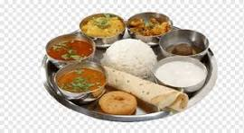
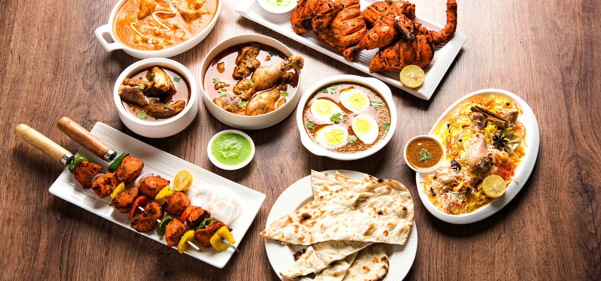

Cuisines
Bengali
The cuisine has been shaped by the region's diverse history and climate. It is known for its varied use of flavours including mustard oil, as well as the spread of its confectioneries and desserts. There is a strong emphasis on rice as a staple, with fish traditionally the most common protein.

Gujrati Food
Gujarati cuisine is the cuisine of the Indian state of Gujarat. The typical Gujarati thali consists of rotli, dal or curry, rice, and shaak

Mughali Food
Mughlai cuisine consists of dishes developed or popularised in the early-modern Indo-Persian cultural centres of the Mughal Empire. It represents a combination of cuisine of the Indian subcontinent with the cooking styles and recipes of Central Asian and Islamic cuisine.
